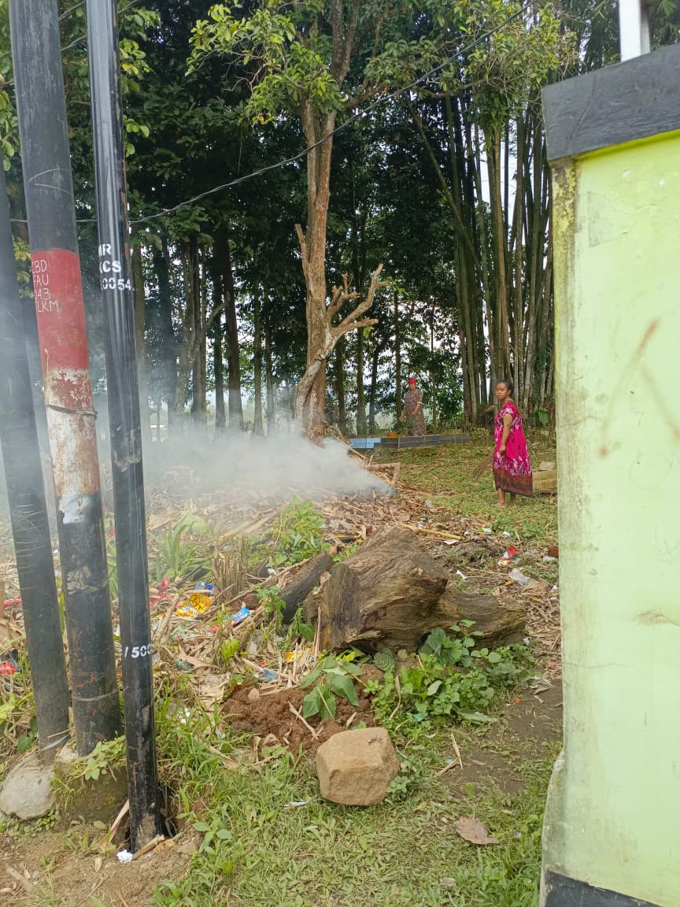

Pencemaran Udara

Terlihat kepulan asap putih yang tebal keluar dari tumpukan sampah yang sedang dibakar di area terbuka. Asap ini mengandung partikel halus, karbon monoksida, dan berbagai gas beracun lainnya yang langsung terlepas ke atmosfer.
Asap hasil pembakaran sampah tersebut tidak terfilter (tidak melalui cerobong), sehingga polutan tersebut tersebar bebas di lingkungan sekitar, yang dapat terhirup langsung oleh warga atau orang yang berada di dekat lokasi.
Aktivitas seperti ini, jika dilakukan berulang kali, dapat menyebabkan gangguan kesehatan serius bagi masyarakat sekitar, seperti infeksi saluran pernapasan akut (ISPA), iritasi mata, dan masalah jangka panjang pada paru-paru.